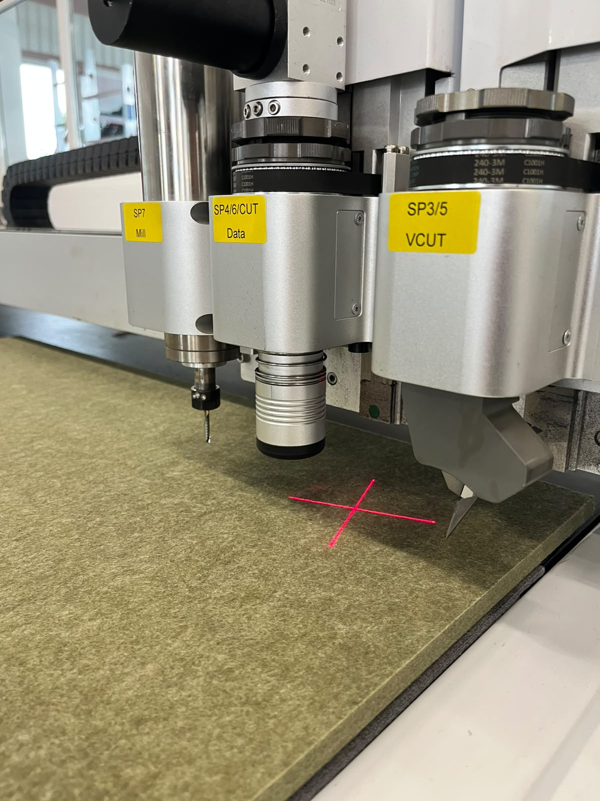

Dizajn i razvoj
Svaki projekt počinje idejom koju oblikuje naš iskusan tim dizajnera, projektnih developera i tehničkih stručnjaka. Od stvaranja koncepta do pripreme za proizvodnju, kreativne vizije pretvaramo u funkcionalna i estetski dorađena rješenja od PET felta.
CNC rezanje i precizna obrada
Našu proizvodnju pokreće četiri napredna CNC stroja za rezanje, uključujući jumbo-format mogućnosti. To nam omogućuje da obradimo projekte svih dimenzija uz maksimalnu preciznost i učinkovitost.
Nudimo širok raspon mogućnosti obrade, uključujući:
- Precizno rezanje
- Glodanje
- V-cut obrada
- Označavanje olovkom
Svaki detalj se izvodi s točnošću kako bi se osigurala dosljednost, čisti završeci i visoki proizvodni standardi.
3D oblikovanje i tehnologija prešanja
S četiri vakuumske preše za 3D oblikovanje stvaramo dinamične oblike, akustične elemente i dizajnerske forme po mjeri koje kombiniraju funkcionalnost s modernim dizajnom. Ova tehnologija omogućuje da PET felt postane više od materijala — postaje arhitektonsko i vizualno iskustvo.
Lasersko rezanje i graviranje
Naš laserski sustav u jumbo-formatu omogućuje precizno rezanje i detaljno graviranje izravno u PET felt materijal. To otvara beskrajne mogućnosti za brendiranje, dekorativne primjene, akustični dizajn i prilagođena vizualna rješenja.
Automatizirano lijepljenje
Kako bismo osigurali učinkovitost i dosljednu kvalitetu, koristimo automatiziranu liniju za lijepljenje PET felta. Ovaj proces jamči pouzdano prianjanje, čistu izvedbu i proizvodnju koja se može skalirati za projekte svih veličina.
Materijali, boje i dostupnost na zalihi
S internom zalihom od preko 10.000 panela PET felta u više od 52 boje, osiguravamo brzu proizvodnju, pouzdanu dostupnost i veliku kreativnu slobodu za svaki projekt.
Stručnost koja upotpunjuje svaki detalj
Iza svakog proizvoda stoji iskusan tim CNC operatera, dizajnera, inženjera i montažera. Od prve skice do finalne ugradnje, svaka faza se vodi s preciznošću, znanjem i pažnjom prema detalju — donoseći rješenja koja spajaju dizajn, kvalitetu i dojam koji traje.
4
CNC stroja za rezanje
4
Preše za 3D oblikovanje
10.000+
Panela na zalihi
52+
Dostupnih boja